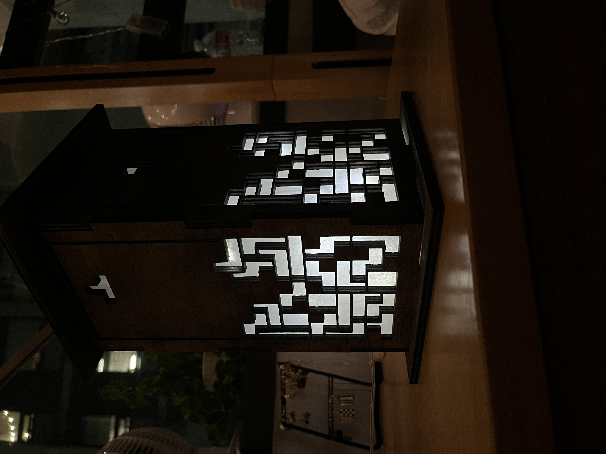
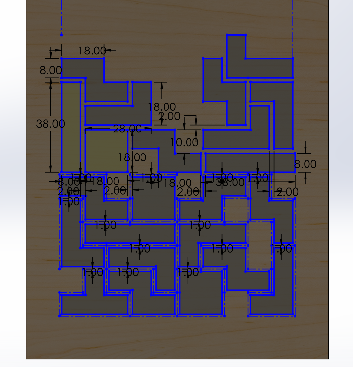
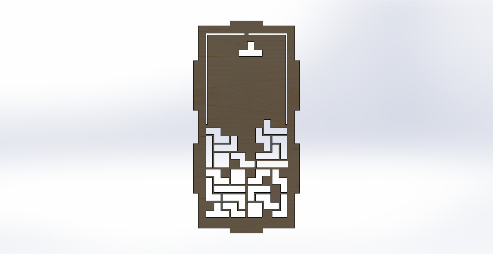
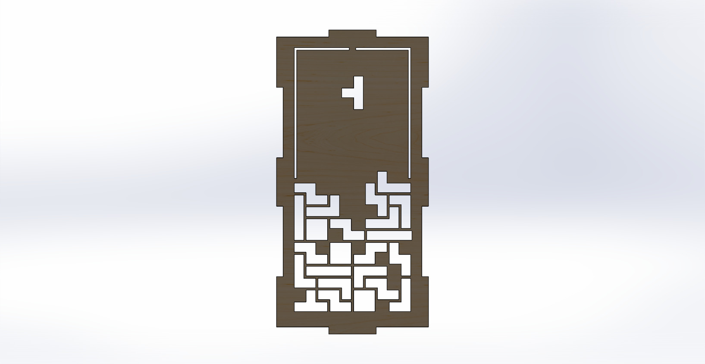
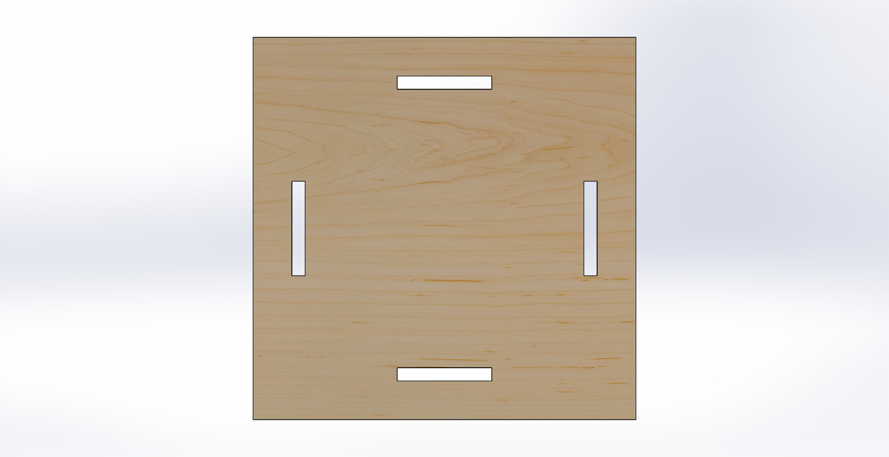
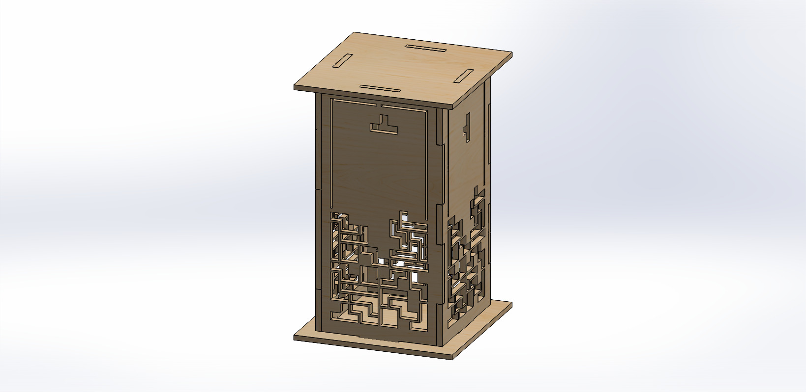
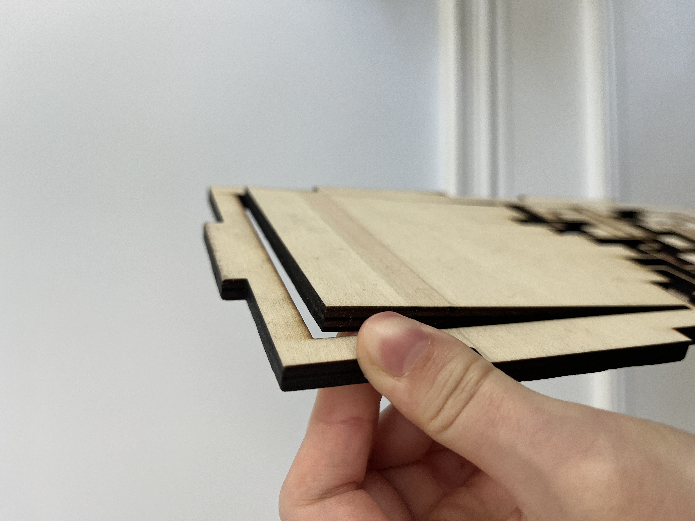
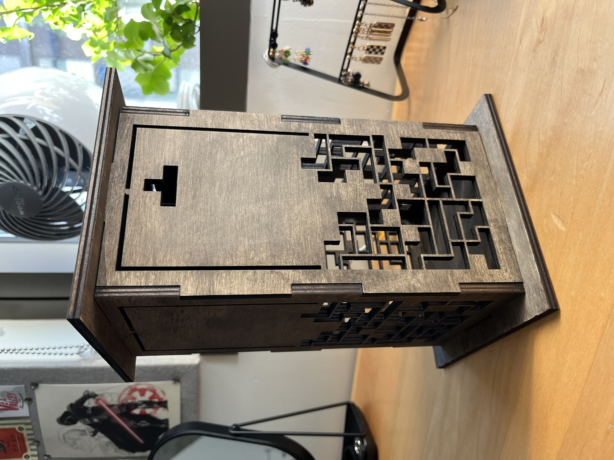
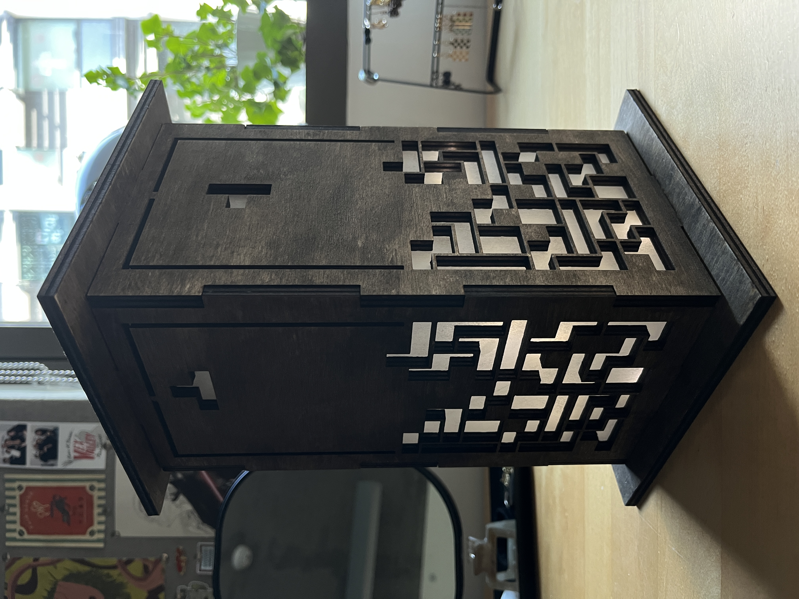

Tetris Lamp

Project Overview
Inspired by laser cut lamps I found on Pinterest, I decided to make this as a gift for someone special to me. This was my first ever laser cutting project, which was challenging, especially since it was a personal project without any guides to follow.
It took some trial and error, but it was a very rewarding project — it gave me valuable hands-on experience with laser cutting and upped my homemade gift-making game.
1. Making the Tetris Board Design
To keep the design relatively accurate to the game, I had to place the pieces so they wouldn't clear a line in Tetris. That meant making sure to leave at least one gap per row while still using game-accurate Tetris piece shapes.

2. Lamp Geometry
The geometry of the design was relatively simple, since I only had to make three distinct pieces: the top and two sides. The top could double as the bottom, and the sides opposite one another followed the same shape, just with a different cut pattern.
This also laid the groundwork for easier tolerancing — I only had to make adjustments to the even sides (to account for the odd sides) and the top piece.




3. Calculating Tolerances
Tolerancing the sides was by far the most challenging part of this project, since this was my first time working with a laser cutter and having to account for kerf. My goal for the fit was to assemble the lamp without glue — I wanted to be able to take the lights in and out with ease, but also have it hold itself together.
Before cutting whole pieces, I created a test cut to see which fit worked best with the 6mm thick wood. Having previously only worked with 3D printing, I was used to adding positive tolerance to my pieces — so I greatly underestimated how much wood the laser would burn off. I eventually landed on a negative tolerance of around 0.4mm.


4. Design Changes & Cutting Issues
While dialing in the tolerance for the even sides and the top, I cut one of the odd sides and ran into two problems: excessive bending, and the laser cutter struggling to cut all the way through the 6mm wood.
- To fix the bending, I added a small notch at the top of the piece.
- The laser cutter took more tuning — I tested different power and speed settings, and found that cutting fewer pieces at once, with the more complex ones placed toward the center, improved accuracy.
5. Post Laser Details
Once all the sides were cut, I stained the wood with a dark stain and sanded the surfaces. Due to time constraints and preference, I chose not to apply a finish to the sides.
To hide the fairy lights and even out the glow, I glued parchment paper to the inside of the lamp.

